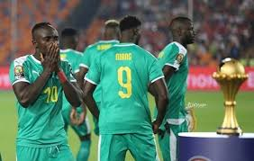
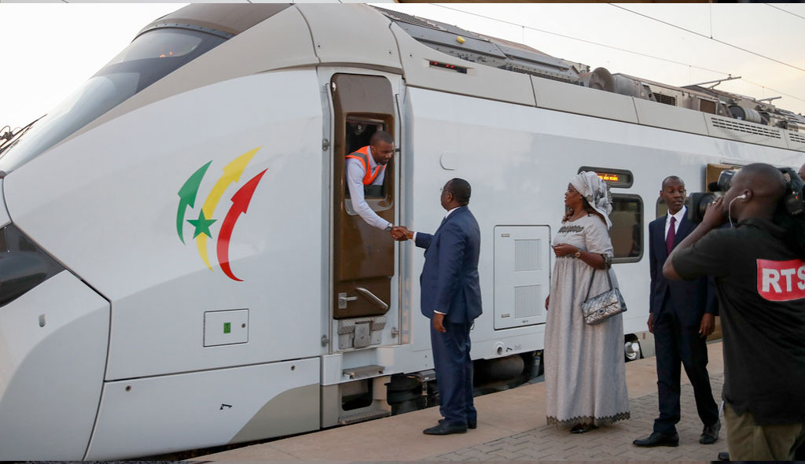

Les 7 AXES DU PROGRAMME DE LA COALITION AND DAFAR TIVAOUONE"ADT" :
Les articles du jour

Le Sénégal joue la finale du coup d’Afrique :
Au soir du six février 2022 à Yaoundé, tout un pays s’accroche au destin de leur équipe nationale.
Au soir du finale, l’ombre d'un Sénégalais ne circule dans les rues, les regards et espoirs braqués sur la pelouse de Yaoundé,
le Cameroun théâtre de la destinée d’un peuple.
Les lions de Youssou Ndour
Les articles du jour
Aliou Cissé, plus grand coach de l'histoire du Sénégal?
Aliou Cissé, le sélectionneur de l'équipe nationale du Sénégal, est entré dans l'histoire du football de son pays.
La finale de ce vendredi opposant le Sénégal à l'Algérie est un match crucial pour sa carrière.
En cas de victoire des Lions, Cissé sera le coach le plus titré du Sénégal car il deviendra le premier à remporter le trophée continental.
Et même en cas de défaite, ce sera seulement la deuxième fois de l'histoire que le pays aura occupé la deuxième place dans cette Il a su imposer une discipline militaire à ses joueurs qui le surnomme Yahya Jammeh,
du nom de l'ancien homme fort de la Gambie, en exil depuis 2017 en Guinée Equatoriale., ce qui reste un exploit.
Les articles du jour

Dakar: le premier TER africain entre en service
Nous avons assisté aux derniers préparatifs de l'entrée en service en début d'année 2022 du TER de Dakar qui transportera 115.000 personnes par jour.
Sept ans de travaux pour désengorger une capitale aux incroyables embouteillages.
C'est l'histoire d'un train de banlieue qui répondait au joli nom de Petit train bleu.
Créé en 1987, il desservait toute la périphérie ouest de Dakar, transportant jusqu'à 20.000 personnes par jour entre la capitale et Rufisque.
Il roulait sur les anciennes voies métriques qui reliaient cette ville à Bamako, soit une double voie de 27 km où les trains étaient tractés par des locomotives diesel. Exploité par l'État sénégalais, le service a été totalement arrêté en 2020, la société du PTB se transformant en GTS – Grands Trains du Sénégal.
Mais, pour résoudre les embouteillages apoplectiques de Dakar, l'Etat s'est résolu à lancer un appel d'offres pour rouvrir la voie ferrée qui s'est avérée être la seule solution pour désengorger l'actuelle autoroute A1.
En effet, Dakar est situé sur une presqu'île. Son agglomération, de plus de trois millions
d'habitants, accueille chaque année environ 100.000 résidants supplémentaires.
Les articles du jour
Receuils de poéme :Je vous parle de MOI
Auteur: Abdoul Aziz Sall
Préface - "Je vous parle de moi"
Cher lecteur,
Il me semble étrange de commencer cette préface en vous parlant de moi, car en réalité, en vous
parlant de moi, je vous parle de vous. Vous vous demandez sûrement comment cela est possible, et
je vous invite à plonger dans les profondeurs de ce recueil de poèmes qui, bien qu'ils ne soient pas
exclusivement poétique, vous permettront de vous découvrir et de vous reconnaître à travers mes
mots.
Ce recueil est divisé en deux parties, deux périodes de ma vie qui ont laissé des empreintes
indélébiles dans mon être. La première partie, ancrée dans mes années de lycée, est telle que je l'ai
vécue, telle que je l'ai écrite. J'ai tenu à recopier ces textes avec leur authenticité brute, préservant
ainsi les émotions et les pensées qui ont jailli de ma plume à cette époque particulière de ma
jeunesse.